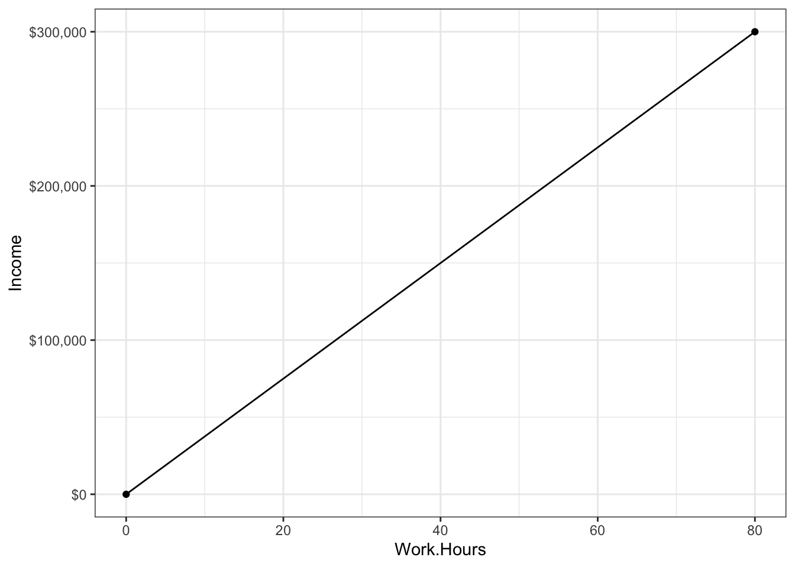
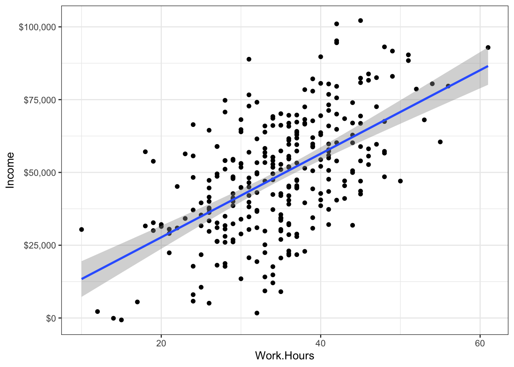
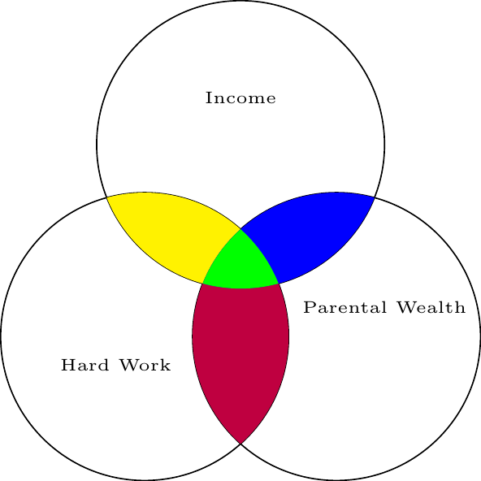
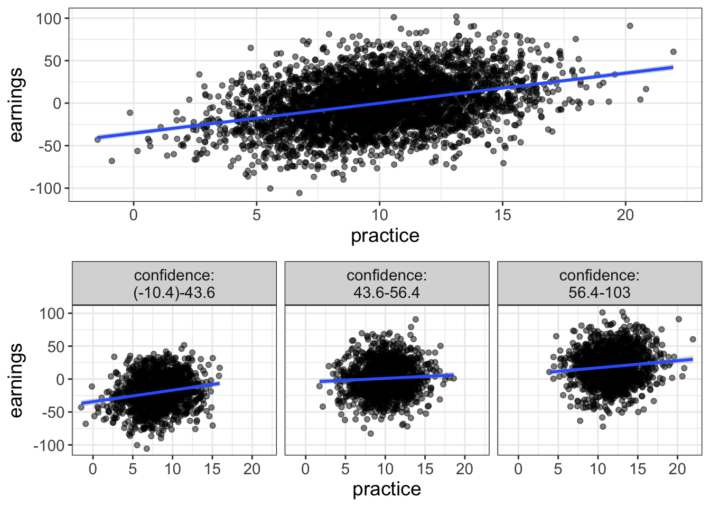
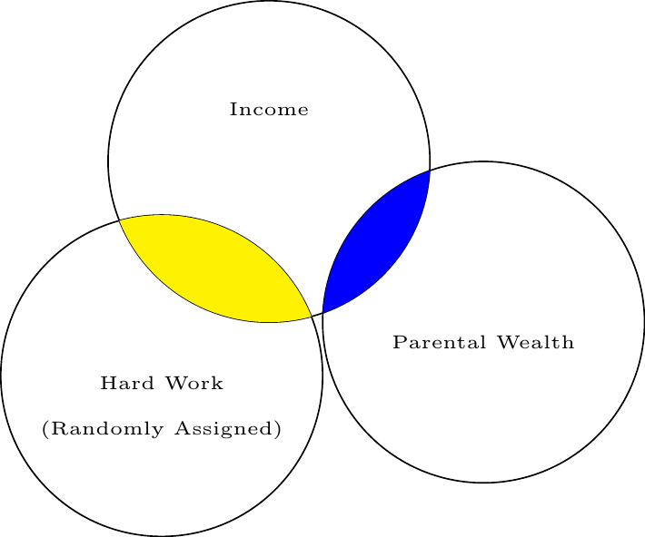
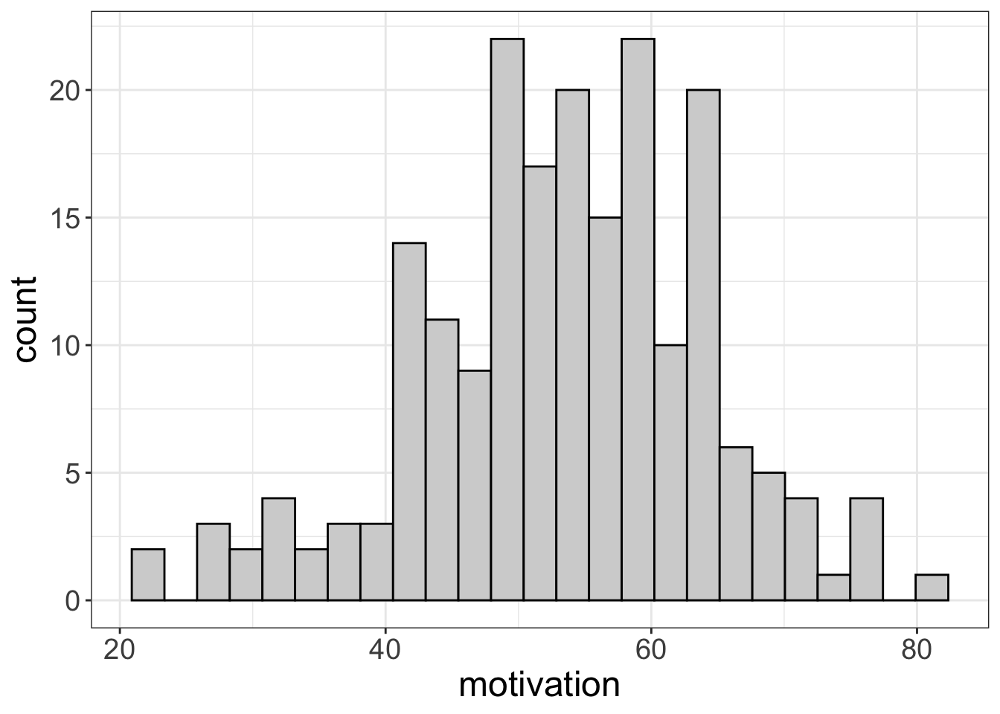
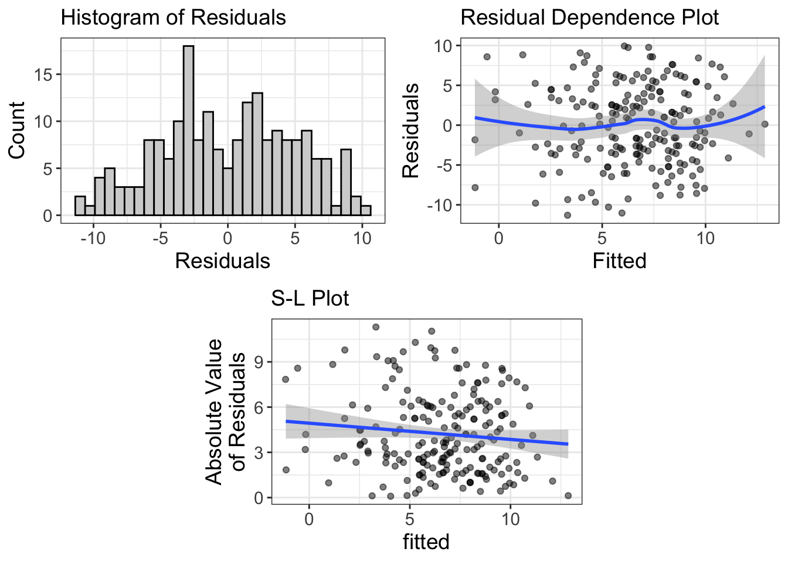

Multivariate GLMs: Conditioning Effects
There were once two identical twin brothers, separated at birth, one named Tim, the other named Burton. Tim was born to a wealthy family. Said family paid for private tutors, incentivized Tim to do his homework with donuts and hot chocolate, and build him his own baseball diamond. Burton, on the other hand, was not so lucky. Shortly after the adoption, Burton’s father died. Burton’s mom, now an uneducated spinster, took double shifts at a local diner. When she could afford it, she paid for daycare, but more often than not, Burton spent his time watching Sesame Street and eating Hot Pockets.
Decades later, Tim works as a successful hedge fund manager, making millions. Burton, on the other hand, fell into a troubled group of friends, began drinking, and accidentally killed a youth in a drunk driving incident.
When Tim learns of his twin, he pays a visit to Burton, who recently was released from prison. Tim was appalled and could only conclude, “It’s like my pop always said…the key to success is hard work.”
Hard work, eh?
We could model that, you know. We could build a statistical model that predicts success (say we define it as income) from hard work (say we define it as hours worked per week). Clearly, because Tim works 80 hours a week and Tim is jobless, we would see a striking relationship:

Of course, you’re smart enough to know that doing statistics with only two datapoints (Tim and Burton) is pretty useless. So, perhaps, you go out and collect more data. What now?

Can we now conclude that working hard = success?
No.
Why? There’s lots of reasons, but for today, we’ll focus on one: you can’t disentangle hard work from a host of other possible explanations. Sure Tim works harder, but he was also incentivized to work harder. And he had many more resources. And he had parents with enough time to invest in his development. These other factors (incentivized to work hard, resources, parental investment) are highly correlated with work ethic and it makes it really difficult to determine whether its the work ethic or something else that caused Tim to be successful.
Multicollinearity
This little example illustrates something we call “multicollinearity,” or “collinearity.” Collinearity means that we have predictor variables that are correlated with one another. When we have variables that are correlated, it’s hard to figure out which variable is causing the outcome. Once again, is it work ethic? Parental wealth? Resources? Love and affection? Access to clean drinking water?
Perhaps I’ll submit to convention and illustrate this with a Venn diagram.
The overlap between circles represents the degree of correlation (more overlap = more correlated). What we want to know is the yellow-colored area: how much overlap exists between hard work and income, once we subtract out any shared effect of parental wealth.

How then, do we disentangle the explanations? We use conditioning!
Controlling by conditioning
Before I explain conditioning, let’s review some terminology. Once again, we’re going to call the variable we’re interested in (in this case, hard word) the “interest variable.” Why? Because it’s the variable we’re interested in. The variable we’re trying to control for, we’re going to call a “covariate” or a “control” variable
Interest variable: the predictor variable for which we’re wanting to determine the strength of the relationship
Covariate: the predictor variable for which we’re trying to control.
Let’s say, for the sake of explanation, we think it was parental wealth that caused Tim’s success, not his work ethic. In other words, the interest variable is work ethic and the covariate is parental wealth.
If we were to write a model as a GLM, we might use:
\(\text{Outcome} = b_0 + b_1\text{Covariate} + b_2\text{Interest Variable} + e\)
It’s customary to put the covariate first, then put the interest variable. Why? Two reasons. The first is in the technical box. The second reason is psychological; that which is last is most easily remembered. So, putting our interest variable last is an easy reminder of which variable we’re actually interested in.
Why is the covariate put first? Type I/II/III Sums of Squares!
This whole book is based on the GLM. But it used to be that people thought in terms of ANOVA models. To compute an ANOVA, you essentially compute two or more types of variances, then divide those variances. Whenever we have multiple variables, especially if those variables are not under the control of the experimenter, there’s a good possibility the variables will be correlated. When variables are correlated, it becomes hard to figure out which variable gets “credit” for predicting the outcome.
If you look at the Venn diagram above, you’ll notice that I’ve defined “credit” by a variable’s unique contribution; hard work uniquely contributes to income by the amount designated in red. Another name for unique credit is “Type III Sums of Squares.” Why that name? Well, long story short, an ANOVA is trying to explain variance. Another name for variance is sums of squares. So Type III Sums of Squares is a fancy way of saying, “Variance explained, according to the third type of defining variance explained.”
So what are Type I/II? Type I means that whatever variable is entered first in a model gets the credit. So, if our model was Income = \(b_0 + b_1\)Hard Work \(+ b_2\)Parental Income, Hard work would get the credit for the information presented in yellow + green, while Parental Income would only get credit for the blue area. Type II is similar to Type III, but it ignores interaction effects (i.e., it “controls” for all main effects, but not interactions).
I think it’s pretty stupid to give one variable more credit than another, just because we happened to enter it first in the model. For that reason, I always use Type III sums of squares.
If we were to write the above equation for the GLM using our own variables, we would put:
\(\text{Income} = b_0 + b_1\text{Parental Wealth} + b_2\text{Hard Work} + e\)
Once again, we want to know the unique contribution of hard work, controlling for parental wealth. To condition, we could divide our sample based on the covariate, into different wealth brackets. Suppose, for example, we divide our sample into three groups: those who make less than $20K, those who make less than $50K, and those that make more than $50K.

What does this accomplish? Now we have three different groups that are roughly homogenous on parental wealth. Or, put differently, we are finding people who differ in their work hours, but are similar in how wealthy their parents are. If parental wealth is entirely responsible for their income, we would expect to see no relationship between work hours and income. Yet, in the above plot, there is still a relationship there.
So, we could say that, after conditioning on the covariate parental wealth, there is still a positive effect of work hours on income.
This is the basic idea behind conditioning. We know that predictor variables can often be correlated with one another, yet we want to know the unique contribution of a particular variable. To do so, we separate our sample into subsets that are homogenous on the covariate, then see if there’s still a relationship between our variable of interest and the outcome.
Let’s go ahead and look at an example where conditioning eliminates a relationship. Let’s say you’ve got a friend who’s a bit of a gambler. He says he’s been practicing for a poker tournament. Your friend, an odd one, has data showing that the more practice a poker player has, the more money they earn in the end. But you’re skeptical. Cards drawn are completely random. What matters is confidence. Confident players are better able to summon a poker face and more willing to make risky bets when they have good cards.
The graph below shows the unconditional relationship on top and the conditional relationship on bottom. Sure enough, once you separate poker players into groups of approximately equal confidence, there’s little relationship between practice and earnings.

Conditioning is just residualizing
In reality, statistical models don’t actually separate the groups to do conditioning. Instead, the models residualize things.
And, it turns out, we’ve already talked about this. Remember back in the diagnostics chapter how I mentioned that a model is comprised of two components:
y = fitted + residual
Also remember that residuals represent what remains in the outcome variable after we’ve fitted the model. Or, put differently, a residual reflects the value of the outcome after we’ve subtracted out or removed the effect of the model. When we condition, we’re doing the same thing. We’re essentially fitting a model first (e.g., a model that predicts earnings from confidence), then seeing the effect of a new variable on the residualized outcome (e.g., seeing the effect of practice on earnings, once we’ve removed the effects of confidence).
But there’s a visual way of showing this. Remember the added variable plots we talked about in the last chapter? Once again, these plots actually plot the variable of interest (in our case, practice) against the residuals of the model.
All the ways of thinking about “conditioning”
There are actually many different ways to think about conditioning. We’ve already mentioned two: (1) conditioning is like separating the data into homogenous groups based on the covariate, and (2) conditioning is like using the interest variable to predict the residuals after subtracting the effect of the covariate. There’s still another way of thinking about conditioning: (3) conditioning is like assuming every person has the same score on the covariate.
All these are different ways to think about it, but they’re essentially the same. You should probably practice mental yoga, bending your mind to think about it as all three ways at the same time. Because, really, that’s what it is.
Be careful about conditioning! (And using multiple regression)
Perhaps it seems too good to be true. Wow! We can find the unique contribution of a variable! With that, we can find cause and effect and be true Jedi stats masters!
Well, not quite. There’s always a catch. This time, there’s four: (1) Conditioning will not prove causation, (2) don’t condition for the very thing you’re trying to model, (3) Use conditioning for targeted hypotheses, not for fishing, and (4) conditioned analyses only make sense if there are no interaction effects.
1. Conditioning will not prove causation.
You’ve probably heard many marginally-educated souls repeat the mantra that correlation does not prove causation. And it’s true.
But, correlation can provide evidence for causation. For example, a lack of correlation between race and death penalty is evidence that there’s no relationship between race and death penalty. But, it’s very weak and misleading evidence. As I mentioned, once you condition on the race of the victim, a much different picture emerges.
The problem with using conditioning as evidence for causality is that there are always an infinite number of variables you can condition on. Is there a strong correlation between processed food consumption and heart disease? Sure, let’s say there is. But maybe it’s not processed food consumption per se, but perhaps people who are health-conscious tend to both consume less processed food and they tend to exercise more regularly. So, maybe we condition on exercise and find there’s still a relationship between the two. Has our evidence for causation strengthened?
Certainly, but we still have weak evidence. Maybe our covariate should really be wealth; wealthy people can afford non-processed foods and they have more to spend on top-notch health care. Okay, so maybe we control for that and still find a strong relationship between processed food consumption and heart disease. Has our evidence for causation strengthened?
Yes, but, once again, it is still weak. So maybe we control for age, race, geographic area, type of salt used, shoe size, and knowledge of 80’s pop culture. After all that, we might still find a relationship, but there’s always a possibility there’s some covariate we haven’t yet controlled for.
So, again, it’s evidence, but it may be weak evidence. We can strengthen the evidence by controlling for various factors that theoretically may be related to the outcome of interest. But, the possibility remains that there’s a “confound.”
A much easier approach to controlling for boat-loads of variables is to do experiments. Why do experiments work? Because the interest variable (independent variable) is assigned at random. In other words, nothing should be correlated with the interest variable because it was created at random. That would be like moving the circle away from the covariate in our Venn Diagram:

2. Be Careful what you condition on
There’s this weird habit I have seen in the world of research. Seems these folks are fans of conditioning or controlling for anything and everything, without a passing thought about why they’re conditioning. I’ve even asked why they condition on this or that.
“Well,” they say, “that’s what everybody else seems to be doing.”
It wouldn’t be the first time everybody else is doing something stupid.
Here’s the problem: by conditioning thoughtlessly, you may be conditioning on the very thing you’re trying to model. I once heard of a statistician who was trying to demonstrate there’s no such thing as racial profiling. To do so, he built a model that predicted who would be pulled over using an interest variable (race) and several covariates. For simplicity, let’s say the covariates were type of car driven, the clothing the person wore, the accent with which they spoke, and religion. After controlling for these variables, the statistician found no relationship between race and the probability of being pulled over.
Here’s the problem with this analysis: these covariates (type of car driven, clothing, accent, and religion) are heavily influenced by one’s culture. It would be extremely unusual to see an African American male driving a horse-drawn carriage, wearing overalls, speaking with a German accent, and attending Mennonite church services. You might even go so far as to say that skin color (e.g., black versus tan versus white) is meaningless by itself. These factors (car driven, clothing, etc.) are so heavily influenced by cultural factors that, once you control for them, you have actually controlled for the very thing you’re trying to model.
So, before you try to control for a particular covariate, spend some time thinking about whether you actually want to control for it. Perhaps, as in the example I use, controlling for that thing yields the interest variable meaningless.
3. Only study and interpret the effects of the interest variable
Multivariate GLMs are kind of dangerous, at least if they’re approached from the antiquated NHST paradigm of the past. Why? Well, let’s say we’re trying to model heart disease based on an interest variable (processed food consumption) and various covariates (socioeconomic status, exercise, and age). Using the GLM, our model becomes:
Heart Disease = \(b_0 + b_1\) SES \(+ b_2\) exercise \(+ b_3\) age \(+ b_4\)processed foods \(+e\)
Note that we don’t care about \(b_1-b_3\); we only care about \(b_4\). Even though that’s all we care about, the computer doesn’t know that. So, it will report estimates for everything we have in the model, even the variables we don’t care about. The problem is much worse if you’re using anything but flexplot because the computer will report p-values for each and every variable in the model. So, we might start our analysis with the idea that we will study the effect of processed foods, but our eyes might be pulled to look at the whopping SES effect, or the statistically significant exercise effect.
There are two problems with doing that. First, if we are lured by the significance of p-values, we are deceiving ourselves; in this situation, p-values have no probabilistic meaning. Remember a p-value only means something if we have specified our sample size in advance, met all the assumptions, and perform one test (or control for multiple comparisons). Nearly all statistical packages out there disregard this fact and default to reporting p-values for every single parameter in the model.
That’s a problem.
Multivariate GLMs (or multiple regression) are not a means for performing a fishing expedition. They should be used for targeted hypotheses, which means we should only study and interpret the parameter for the interest variable.
4. Conditioning with interaction effects.
One final problem with conditioning: it only makes sense if there are no interaction effects in the model. Alas, I have not explained what interaction effects are. That is the topic of the next chapter. For now, know this, young padawan: there is great danger in conditioning if a covariate interacts with the interest variable. If there is an interaction, the conditioned analysis is senseless.
Conditioning on Colliders
I kinda wish this box weren’t necessary. But, I fear that some egghead out there will give me a negative ten star review on Amazon if I don’t address this.
Most people act under the assumption that conditioning can’t hurt; if I control for a variable that’s not actually a confound, the worst it can do is make my estimates slightly less precise. Alas, there are actually times when conditioning on a covariate could introduce bias. Specifically, if you have an interest variable and a covariate that are not correlated in the population, then you condition on the covariate, you will actually induce a negative correlation between the interest variable and the covariate.
Huh?
Here’s an example. Let’s say, for the sake of simplicity, that beauty and talent for acting are uncorrelated. It’s probably a safe assumption. I’ve known some beautiful people who truly suck at acting. Likewise, I’ve seen some ugly actors. However, let’s say we “condition” on success by sampling from Hollywood. Would you be surprised if talent and beauty are correlated in Hollywood? In fact, they are. Why? Because if you’re really beautiful, you don’t need a whole lot of talent to be in a movie. On the other hand, if you’re talented, you don’t need to be as beautiful. In other words, one’s talent (or beauty) can compensate for weaknesses they have in another area. This means that there will be a negative correlation between talent and beauty amongst movie stars.
Again, this correlation doesn’t exist when we don’t do a conditional analysis.
We call this “conditioning on a collider.” If you have an interest variable and an outcome that are uncorrelated, but both are related to a covariate, if we then condition on that covariate, we will see a spurious correlation between our interest variable and our outcome.
Fortunately, very few variables are truly uncorrelated, so I suspect this sort of situation is rare.
All these reasons suggest that we ought to be very careful when we condition. Our choice of what to condition on ought to be carefully considered in light of theory. Then, this should be followed by targeted hypotheses and our interpretation should only focus on the parameters that are actually of interest.
Additional Estimates of Interest
Ya’ll’r familiar with estimates. We’ve talked about Cohen’s d, slopes, intercepts, means, mean differences, etc. Each of these numbers answer a particular question. That’s all well and good, but not much help when we start doing multivariate analyses. Why? Because with multivariate analyses, we are asking different questions. Before, we might have been asking what the mean difference is between groups. Now, however, we want to ask conditional questions. For example, we might want to know how strong an effect is after controlling for another variable.
That means we need new estimates, we do. And it’s right time we get them estimates.
Slopes
Well hot dang. I just said we need to introduce new estimates, yet here I am talking about something we already know about: slopes.
Why am I doing such nonsense?
Well, the reason why is because the slopes now take on new meaning. Let’s say we have a bivariate model like this:
punch force = \(b_0\) + \(b_1\)Bicep Circumference
Remember that \(b_1\) tells us the amount of punch force we can expect whenever one gains an inch of bicep circumference.
Things change slightly with a multivariate analysis. Let’s add another predictor:
punch force = \(b_0\) + \(b_1\)Bicep Circumference + \(b_2\)Grunt Volume
With the addition of this second variable (grunt volume…it’s a scientific fact that the louder one grunts, the more force they have), the value of \(b_1\) actually changes meaning. Now it means the expected change in force for an inch gain in bicep circumference assuming grunt volume doesn’t change.
But what does that mean?
Let’s say there’s two fellows competing in a punch force competition: Andre and Alfred. Let’s say both have equal punch force, equal bicep circumference and equal grunt volume. However, Andre decides to alter his training regime. After doing so, he gains exactly an inch of bicep circumference. However, his grunt volume has not changed at all!
What can we expect Andre’s new punch force value to be? Our prediction of his increase in punch force is exactly equal to whatever \(b_1\) is. Why? Because his grunt volume didn’t change. Or, we could say because his grunt volume is “held constant.”
Alfred, on the other hand, also started a new training program. This program also yields an inch in bicep circumference, but it also gives him a decibel in grunt volume. (It’s a very holistic training program). How much do we expect punch force to increase? It is not \(b_2\) because his grunt volume did not remain the same. Instead, it’s actually \(b_1 + b_2\) because both grunt volume and bicep circumference increased by exactly one unit.
This little example may make that whole “holding constant” distinction seem unimportant. But it’s actually quite important when there’s multicollinearity present. Let’s say we have a new model:
punch force = \(b_0\) + \(b_1\)Bicep Circumference in Inches + \(b_2\)Bicep Circumference in Centimeters
Anybody know the correlation between bicep circumference in inches and circumference in centimeters? It’s exactly one. If you know the circumference in inches, you know it in centimeters.
So, let’s think about what the parameter \(b_1\) means: it tells us the expected change in punch force if we were to gain an inch of bicep circumference while gaining no centimeters.
That’s actually not possible. You can’t gain an inch while gaining no inches in centimeters. So, not surprisingly, our value of \(b_1\) will be zero.
So what does this tell us? The slopes actually tell us the unique contribution of a predictor variable. The more strongly an interest variable is associated with a covariate, the smaller we should expect a slope to be.
So, in short, it’s important to realize that a slope has new meaning with multivariate relationships: they reflect the unique contribution of a variable and are interpreted as the change in Y for a unit change in the interest variable if the covariate(s) remain constant.
R squared.
Alrighty, folks. I kinda lied. I said we need estimates that tell us about conditional relationships. Well, \(R^2\) is not one of those estimates. But it’s companion, the semi-partial \(R^2\) is. But, before you understand the semi-p, you’ve gotta know the \(R^2\), yessiree.
So what is R squared? Well, to understand, you have to think kinda sorta like an antiquated statistician. So, lemme take you through an acid-laced trip through the mind of a nerd…
Suppose we want to predict a score. For simplicity, let’s suppose it’s someone’s height. What’s our best guess of their height? Without any information, our best guess is going to be the mean. So, let’s say we predict 5’6" (or 1.67 meters for those smart enough to use the metric system). We will call this prediction (i.e., the prediction with just the mean) as our naive prediction.
But, alas, not everyone in the world is going to be 5’6“. Some are going to be 5’8,” some 4’9“, some 7’8.” We can measure the deviations from 5’6" with the standard deviation. Just for fun, let’s say our standard deviation is 4 inches. So, our naive prediction yields an average error of 4 inches.
Now, however, we want to be less naive. Now we want to predict someone’s height using some information. Maybe we ask them their gender and build a GLM from that. Perhaps our GLM says that our new prediction is 5’3" for females and 5’8" for males. As before, we could measure our new deviations. We would expect this to improve, right? Before, we were off by an average of 4 inches. Now, however, every prediction gets us closer and we’re now only off by 2 inches.
So, to review, before we added gender, our average error in prediction was 4 inches. Now, our average error is 2 inches. In other words, we cut our errors in prediction in half (because 2 inches is half of 4).
That’s very similar to what R squared is: it is a ratio that tells us how much we reduced our error in prediction when we go from just the mean to predicting with our model. But, I’ve oversimplified things. R squared is actually computed from the variance, not the standard deviation. So, for our example before, the error in prediction before was 16 inches (four squared) while now it is 4 inches (two squared). In other words, our \(R^2\) is \(4/16 = 0.25\).
In stats-ese, we would say we have “explained 25% of the variance.” Or, a more elaborate explanation would be, “relative to a model that just predicts someone’s score using only the mean, adding the predictors that we have added reduces the variance by 25%.”
Make sense?
Let’s go ahead and look at an example, using the avengers dataset:
speed.model = lm(speed~superpower, data=avengers)
estimates(speed.model)#> Model R squared:
#> 0.021 (0, 0.04)
#>
#> Semi-Partial R squared:
#> superpower
#> 0.021
#>
#> Estimates for Factors:
#> variables levels estimate lower upper
#> 1 superpower no 5 4.98 5.01
#> 2 yes 5.12 5.06 5.18
#>
#>
#> Mean Differences:
#> variables comparison difference lower upper cohens.d
#> 1 superpower yes-no 0.13 0.04 0.21 0.75Our model’s \(R^2\) is 0.02, which means that knowing one’s superhero status, we are able to reduce our errors in predicting your speed by 2%.
The cool thing about \(R^2\) is that it can be used multivariately; we can know how adding multiple predictors improves our overall prediction. Let’s take a look, by adding agility to our model:
speed.model.2 = lm(speed~superpower + agility, data=avengers)
estimates(speed.model.2)#> Model R squared:
#> 0.247 (0.2, 0.3)
#>
#> Semi-Partial R squared:
#> superpower agility
#> 0.021 0.226
#>
#> Estimates for Factors:
#> variables levels estimate lower upper
#> 1 superpower no 5 4.99 5.01
#> 2 yes 5.08 5.03 5.13
#>
#>
#> Mean Differences:
#> variables comparison difference lower upper cohens.d
#> 1 superpower yes-no 0.08 0 0.15 0.53
#>
#>
#> Estimates for Numeric Variables =
#> variables estimate lower upper std.estimate std.lower std.upper
#> 1 (Intercept) 4.73 4.69 4.76 0.00 0.00 0.00
#> 2 agility 0.01 0.00 0.01 0.48 -0.46 1.42Our \(R^2\) went from 0.02 to 0.25. This new value tells us that, relative to a model that just predicts speed from the mean, if we were to instead add agility and superpower status, we increase our precision to 25%.
Very often, however, we don’t really care about the total model’s \(R^2\)–we care about one variable’s unique contribution to \(R^2\).
Semi-Partial \(R^2\)
The semi-partial tells us how much \(R^2\) a single variable adds to a model. Remember our two models above:
Model 1: Speed = \(b_0\) + \(b_1\)superpower
Model 2: Speed = \(b_0\) + \(b_1\)superpower + \(b_2\)agility
Model 1’s \(R^2\) was 0.02 and Model 2’s was 0.25. The difference between the two: 0.25-0.02 = 0.23 is the semi-partial \(R^2\).
So, the semi-partial tells us how much our model improves in its ability to predict when we add that particular variable to our existing model.
You could, of course, compute the semi-partial “by hand,” by computing the \(R^2\) for a pair of models, then subtract the two, but flexplot will actually do that for you. Let’s look at this code again:
estimates(speed.model.2)#> Model R squared:
#> 0.247 (0.2, 0.3)
#>
#> Semi-Partial R squared:
#> superpower agility
#> 0.021 0.226
#>
#> Estimates for Factors:
#> variables levels estimate lower upper
#> 1 superpower no 5 4.99 5.01
#> 2 yes 5.08 5.03 5.13
#>
#>
#> Mean Differences:
#> variables comparison difference lower upper cohens.d
#> 1 superpower yes-no 0.08 0 0.15 0.53
#>
#>
#> Estimates for Numeric Variables =
#> variables estimate lower upper std.estimate std.lower std.upper
#> 1 (Intercept) 4.73 4.69 4.76 0.00 0.00 0.00
#> 2 agility 0.01 0.00 0.01 0.48 -0.46 1.42Notice that second section labeled “Semi-Partial R squared?” Nice, that. Ya’ll can thank me now. I accept cash, check, and Subway coupons.
So, in summary, a semi-partial tells you how much adding a single predictor improves our prediction above and beyond a model without that variable.
Applied Analyses
Now that we have all the theoretical nonsense out of the way, let’s do some analyses. I’m going to use three examples. The first one is what we would traditionally call an “ANCOVA,” which is used when we have one categorical variable and one numeric covariate. The second analysis will be what we would traditionally call a “Multiple Regression,” which is used when we have two numeric variables (one a covariate and one an interest variable). Finally, I’ll do a brief introduction to a mediation analysis, which is a special type of conditioning analysis.
ANCOVA
We would traditionally call this an Analysis of Covariance (ANCOVA). ANCOVAs are generally used when we have a treatment condition and we want to control for a covariate we suspect might muck up our analysis.
For this analysis, we’re going to look at the exercise_data dataset. We know from previous analyses that the behaviorist/cognitive groups lost more weight than the control group. But we know that weight loss is heavily influence by motivation. It’s possible that we accidentally put a bunch of motivated people in the control group and unmotivated people in the treatment groups. In other words, maybe we don’t believe that random assignment didn’t work very well. If that’s the case, we might want to “control” or “condition” on motivation.
So, our research question might be:
Once we control for motivation, those in the treatment groups (cognitive and behaviorist) will have more weight loss than those in the control group
Nice.
Now let’s look at the univariate plots.
flexplot(weight.loss~1, data=exercise_data)
flexplot(motivation~1, data=exercise_data)
flexplot(therapy.type~1, data=exercise_data)
Nothing surprising here, especially since we’ve already seen these plots.
Now let’s visualize the statistical model. We could do it in multiple ways. First, let’s put all the data out there at the same time, using a paneled plot. (Not I’m also asking flexplot to show standard errors, instead of medians/interquartile ranges):
flexplot(weight.loss~therapy.type | motivation, data=exercise_data, spread="sterr")Figure 7: Plot of therapy group scores on weight loss for different levels of motivation.
Why did I put the therapy.type on the x-axis? Because it’s the interest variable. I almost always put the interest variable on the x-axis because it makes that relationship most visible. It seems that the two conditions always do better than the control condition, though the degree changes somewhat across motivation levels.
The second way to visualize it is with the added variable plot I mentioned earlier. Remember, therapy.type is my interest variable, so I’m going to put that last in the equation.
added.plot(weight.loss~motivation + therapy.type, data=exercise_data)
Figure 8: Added Variable Plot of the therapy.type scores on weight loss, after controlling for motivation.
This plot seems to indicate that, even after controlling for motivation, the beh and cog groups lose more weight than the control group. But, let’s make sure we’ve met the assumptions:
ancova.model = lm(weight.loss~therapy.type + motivation, data=exercise_data)
visualize(ancova.model, plot="residuals")
The residuals look fairly normal. There’s some bendiness in the residual-dependence plot, but nothing to worry about. Likewise, there’s slight heteroskedasticity, but probably not enough to worry about.
So, at this point, I feel comfortable looking at the estimates of the model:
estimates(ancova.model)#> Model R squared:
#> 0.216 (0.12, 0.32)
#>
#> Semi-Partial R squared:
#> therapy.type motivation
#> 0.079 0.137
#>
#> Estimates for Factors:
#> variables levels estimate lower upper
#> 1 therapy.type control 4.09 2.8 5.37
#> 2 beh 7.82 6.69 8.94
#> 3 cog 7.8 6.52 9.07
#>
#>
#> Mean Differences:
#> variables comparison difference lower upper cohens.d
#> 1 therapy.type beh-control 3.73 0.67 6.79 0.74
#> 2 cog-control 3.71 0.83 6.59 0.74
#> 3 cog-beh -0.02 -2.89 2.85 0.00
#>
#>
#> Estimates for Numeric Variables =
#> variables estimate lower upper std.estimate std.lower std.upper
#> 1 (Intercept) -6.41 -10.17 -2.66 0.00 0.00 0.0
#> 2 motivation 0.19 0.13 0.26 0.37 -0.36 1.1It seems we’re explaining just over 20% of the variance in the model, and almost 10% of that is due to the treatment condition. Yay. We also know that both treatment conditions average about 3.7 pounds more weight lost than the control condition, for a Cohen’s \(d\) of 0.74. Saweet. Also, the mean weight loss in the two conditions is nearly eight pounds.
I’m intentionally not going to interpret the numeric estimates because motivation is my covariate; I’m not interested in that.
Reporting Results for an ANCOVA
I know I’m kind of a weird fellow and have different ideas. You kinda need to be quirky to change the way statsitics is taught and used. However, it also means that, if you are following my approach, you might not be sure how to go about reporting results. If you’re focusing heavily on visualization while the rest of the world is still obsessed with p-values, how do you report information?
Good question, that. I’m going to give three examples. Why three? Because some of you are going to be comfortable being “radicals”–people who give the finger to convention and entirely embrace the new way of doing statistics. Some (I’ll call them the “traditionalists”) don’t want to risk abandoning convention if fear a precious publication will not pass the review process. The traditionalists want to better report statistics, but not at great personal risks. That’s okay! I have a template for you! Finally, there are the “conventionalists,” who want to deviate from convention as little as possible. That’s okay too. I simply ask that you at least push against the boundaries a little.
Here’s the basic approach for each:
- Radicals will not report visuals/estimates/confidence intervals/Bayes factors. They will refuse to report p-values and they will refer to analyses using GLM terminology.
- Traditionalists will report visuals/estimates/confidence intervals/Bayes factors. They will use traditional terminology and report p-values but will not use them to guide their commentary of the results.
- Conventionalists will report/interpret p-values as is typical, but will supplement their analysis with visuals/estimates/confidence intervals/Bayes factors.
Example Reporting of ANOVA (Radical)
When reporting from a “radical” perspectives, I generally have three sections. The first section reports on the model diagnostics. The second section reports and comments on the visuals/estimates. The final section reports \(R^2\) and probability estimates.
We fit a linear model predicting weight loss from motivation and therapy group. First, however, we studied the univariate distributions (see Appendix A), as well as the diagnostics. The diagnostics suggest the residuals of the model are approximately normally-distributed, the model is approximately linear, and the variance is approximately constant.
Once the viability of the assumptions was established, we visualized the model using an added-variable plot (see Figure 8). According to the figure and Table 2, the cognitive and behavioral groups consistently lost more weight than the control group, after controlling for motivation. Therapy group explained 7.9% of the model’s variance.
| variables | comparison | difference | lower | upper | cohens.d |
|---|---|---|---|---|---|
| therapy.type | beh-control | 3.73 | 0.67 | 6.79 | 0.74 |
| cog-control | 3.71 | 0.83 | 6.59 | 0.74 | |
| cog-beh | -0.02 | -2.89 | 2.85 | 0.00 |
Example Reporting of ANOVA (Traditionalist)
After evaluating the assumptions of normality, linearity, and homoscedasticity (see Appendix A), we fit an ANCOVA, estimating the mean differences in therapy groups, after controlling for motivation. Figure 7 shows the three groups across different levels of motivation, t(196) = 5.86, p<0.001. The cognitive group differed from the control group by an average of 3.71 (95% CI: 0.83, 0.83, t(196) = 4.046, p<0.001), while the behaviorist group differed from the control by an average of 3.73 (95% CI: 0.67, 0.67, t(196) = 4.312, p<0.001).
Example Reporting of ANOVA (Conventionalist)
After evaluating the assumptions of normality, linearity, and homoscedasticity (see Appendix A), we fit an ANCOVA, estimating the mean differences in therapy groups, after controlling for motivation. Figure 7 shows the three groups across different levels of motivation. The group effect was statistically significant, t(196) = 5.86, p<0.001. The cognitive group was statistically different from the control group by an average of 3.71 (95% CI: 0.83, 0.83, t(196) = 4.046, p<0.001), while the behaviorist group differed from the control by an average of 3.73 (95% CI: 0.67, 0.67, t(196) = 4.312, p<0.001).
Multiple Regression
For this analysis, let’s say you’re a body builder and you want to demonstrate the advantages of strength training. You want to show that strength training has a large effect on ability. However, you know that both speed and flexibility also influence agility. But, you’re a strength trainer for Stat’s sake. You don’t give two flips about speed and flexibility. Thus, your research question is:
How strongly does strength affect agility, once we control for speed and flexibility
This research question would traditionally be answered using multiple regression. Multiple regression is used when you have multiple numeric predictors and a numeric outcome. But, we’re calling it a multivariate GLM, because, once again, whether a predictor is numeric or categorical doesn’t matter.
Let’s start by looking at the univariate distributions:
a = flexplot(agility~1, data=avengers)
b = flexplot(strength~1, data=avengers)
c = flexplot(flexibility~1, data=avengers)
q = flexplot(speed~1, data=avengers)
require(patchwork)
a+b+c+q
Everything looks spiffy, though speed is a little negatively skewed. But, I see nothing to worry about here.
Let’s look at the multivariate relationships now. As before, I’m putting the interest variable (strength) on the x-axis.
flexplot(agility~strength | speed + flexibility, data=avengers)
Figure 9: Plot of the relationship between strength and agility for various levels of speed and flexibility. The blue lines represent loess lines.
Hmmmm…I’m seeing a lot of curvilinear loess lines here. Let’s go ahead and visualize a quadratic with flexplot:
flexplot(agility~strength | speed + flexibility, data=avengers,
method = "quadratic")
Figure 10: Plot of the relationship between strength and agility for various levels of speed and flexibility. The blue lines represent fits from a quadratic regression.
I reckon that looks right nice. But before we decide on that, let’s go ahead and check out the diagnostics:
multiple_reg_model = lm(agility~strength + flexibility + speed + I(strength^2),
data=avengers)
visualize(multiple_reg_model, plot="residuals")
Figure 11: Diagnostics of the model predicting agility from strength, after controlling for speed and flexibility
Wowsers! That’s more beautiful than my wife smiling at a camera in front of a spring sunset! I’d say that’s a good-fitting model!
Let’s go ahead and visualize the final model using an added variable plot. Because my statistical model is controlling for speed and flexibility, I’m going to residualize that in my AVP:
added.plot(agility~strength, data=avengers, lm_formula = agility~flexibility + speed)
Figure 12: Plot of the relationship between strength and agility, after controlling for speed and flexibility. The blue lines represent the final fit of the quadratic regression model.
That there is a very simple visual representation of our model. Nice!
So, let’s go ahead and look at the estimates:
estimates(multiple_reg_model)#> Model R squared:
#> 0.53 (0.48, 0.58)
#>
#> Semi-Partial R squared:
#> strength flexibility speed I(strength^2)
#> 0.141 0.268 0.016 0.106
#>
#>
#> Estimates for Numeric Variables =
#> variables estimate lower upper std.estimate std.lower std.upper
#> 1 (Intercept) 5.43 -20.58 31.45 0.00 0.00 0.00
#> 2 strength 0.18 0.16 0.20 1.75 -1.68 5.19
#> 3 flexibility 8.42 7.56 9.29 0.56 -0.54 1.66
#> 4 speed -0.43 -6.12 5.26 0.00 0.00 -0.01
#> 5 I(strength^2) 0.00 0.00 0.00 -1.30 1.25 -3.85When we have polynomials, it’s a bit tricky because the speed effect (which is, of course, the effect of interest) has actually been separated into two components: the linear component (called “strength”) and the quadratic component (called “I(strength^2)”). To see the total effect of the interest variable (speed), we have to add them together:
0.141 + 0.106 = 0.247
That there is an impressive amount of esplaining going on. We’re in luck, muscle man.
I’m going to forego looking at p-values and Bayes Factors for this model. The polynomial makes it a little tricky and model comparisons (which we cover in a later chapter) make it much easier.
Suffice it to say, we’ve got a good model now ;)
Reporting of a Multiple Regression
Example Reporting of multiple regression (Radical)
We sought to determine how strongly strength affects agility, after controlling for speed and flexibility. To do so, we utilized a linear model. Upon visual inspection (Figure 10), we determined that the speed/agility relationship is curvilinear: as strength increases, so does agility, until one reaches around 500, at which point more strength actually decreases agility. Consequently, we added a quadratic term to the linear model to account for the nonlinearity. Figure 11 shows the diagnostics of this model, suggesting the assumptions of normality, linearity, and homoscedasticity have been met. The final visual representation of the model is shown in Figure 12.
Table 3 reports the estimates for the variables of interest, along with 95% confidence intervals. (Estimates for the flexibility/speed effects are omitted because they were only used as covariates, Fife, 2021). The linear and quadratic term combined explained 10.741% of the variance in agility.
| variables | estimate | lower | upper |
|---|---|---|---|
| (Intercept) | 5.4347 | -20.5785 | 31.4480 |
| strength | 0.1755 | 0.1551 | 0.1959 |
| \(\text{strength}^2\) | -0.0001 | -0.0001 | -0.0001 |
Note. The model also controlled for flexibility and speed, but these estimates are not presented because they were not of substantive interest.
Example Reporting of multiple regression (Traditionalist)
We sought to determine how strongly strength affects agility, after controlling for speed and flexibility. To do so, we utilized a multiple regression model. Upon visual inspection, we determined that the speed/agility relationship is curvilinear: as strength increases, so does agility, until one reaches around 500, at which point more strength actually decreases agility. Consequently, we added a quadratic term to the linear model to account for the nonlinearity. The final visual representation of the model is shown in Figure 12. Visual diagnostics suggest that after fitting the quadratic term, the assumptions of normality, linearity, and homoscedasticity have been met (see Appendix).
Table 4 reports the estimates for the variables of interest, along with 95% confidence intervals. The linear and quadratic term combined explained 10.741% of the variance in agility (p<0.001).
| variables | estimate | lower | upper |
|---|---|---|---|
| (Intercept) | 5.4347 | -20.5785 | 31.4480 |
| strength | 0.1755 | 0.1551 | 0.1959 |
| flexibility | 8.4244 | 7.5580 | 9.2908 |
| speed | -0.4275 | -6.1161 | 5.2610 |
| \(\text{strength}^2\) | -0.0001 | -0.0001 | -0.0001 |
Note. The model also controlled for flexibility and speed, but these estimates are not presented because they were not of substantive interest.
Example Reporting of multiple regression (Conventionalist)
We sought to determine how strongly strength affects agility, after controlling for speed and flexibility. To do so, we utilized a multiple regression model. Upon visual inspection, we determined that the speed/agility relationship is curvilinear: as strength increases, so does agility, until one reaches around 500, at which point more strength actually decreases agility. Consequently, we added a quadratic term to the linear model to account for the nonlinearity. The final visual representation of the model is shown in Figure 12. Visual diagnostics suggest that after fitting the quadratic term, the assumptions of normality, linearity, and homoscedasticity were met.
Table 4 reports the estimates for the variables of interest, along with 95% confidence intervals. The linear and quadratic term combined explained 10.741% of the variance in agility. This effect was statistically significant (p<0.001).